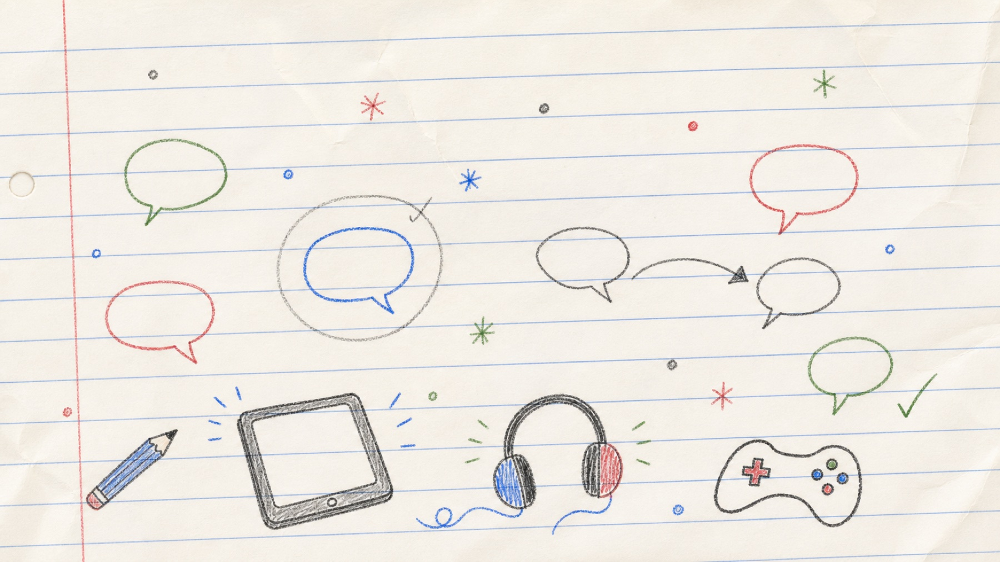
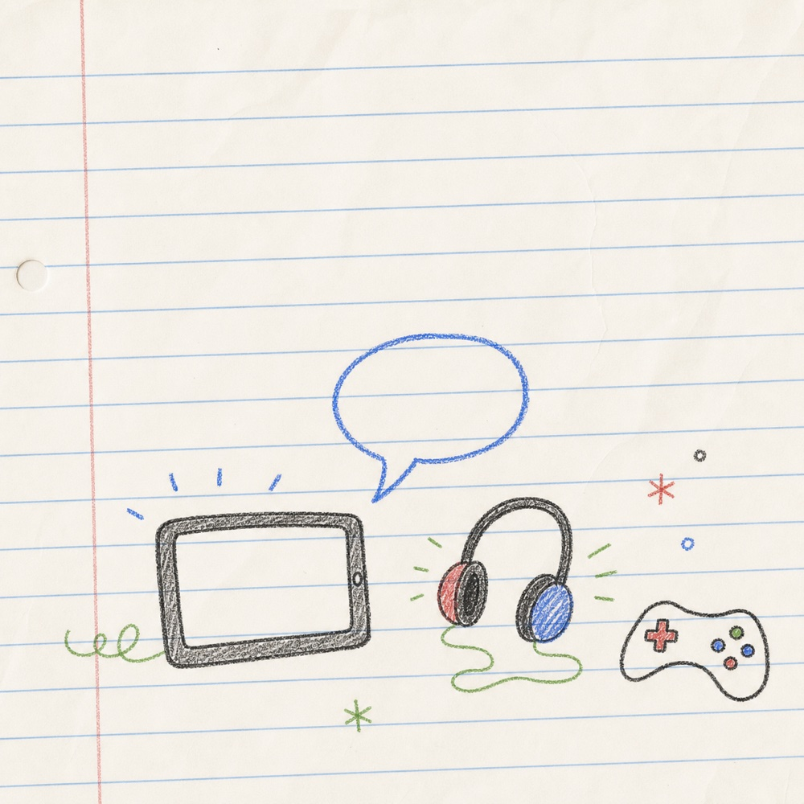
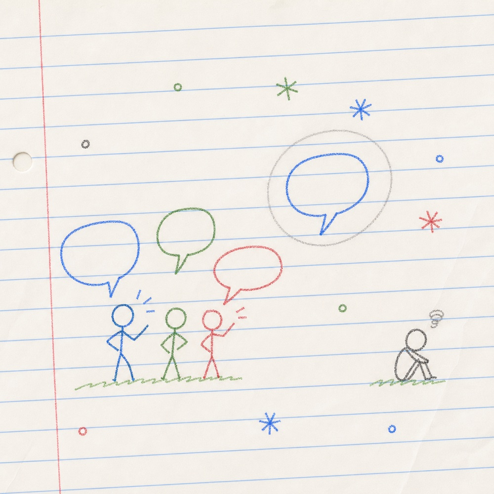
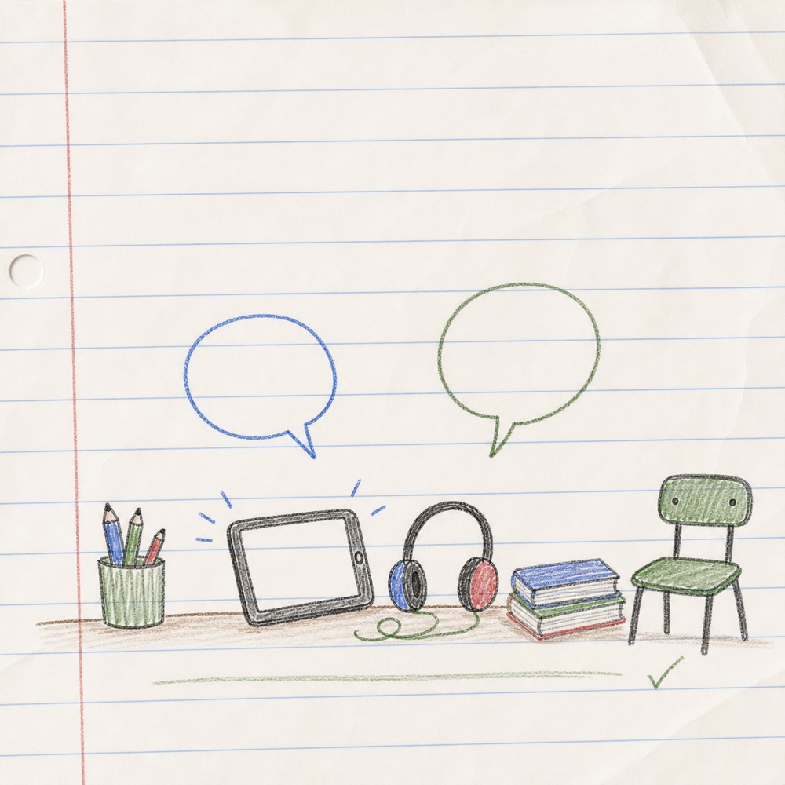
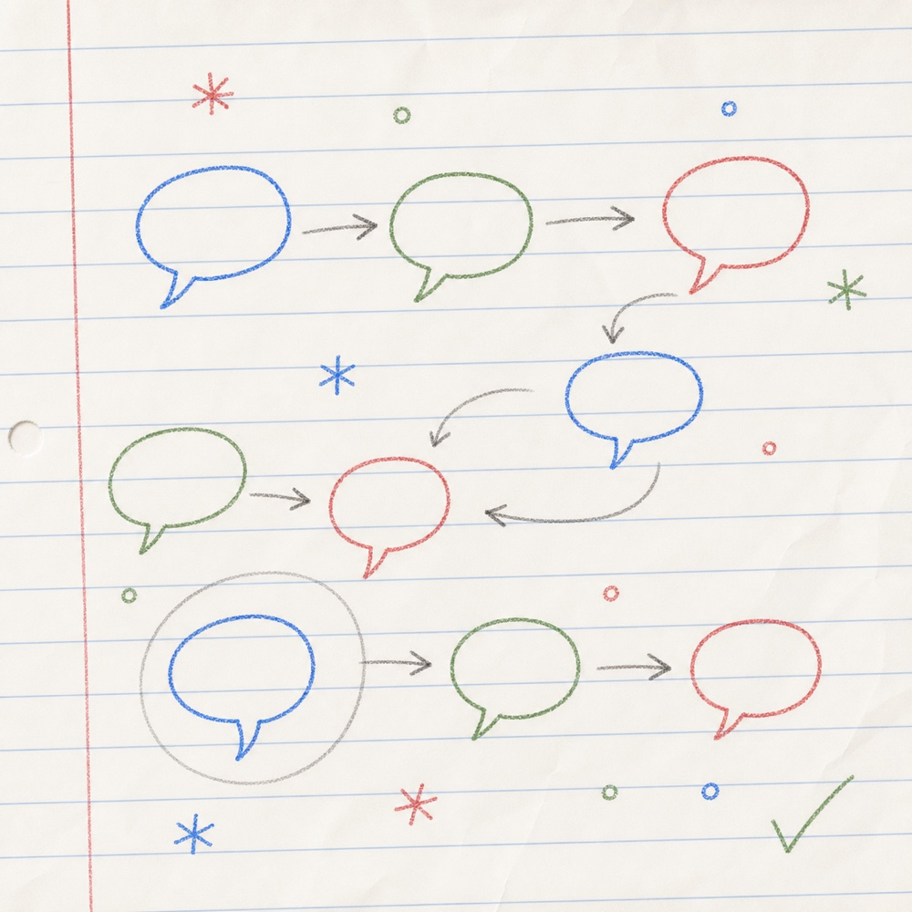
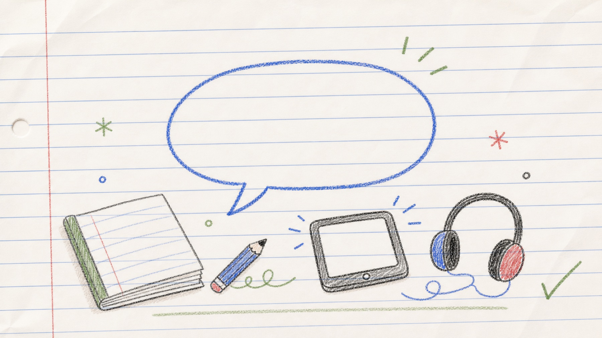

Week 2
Make online life normal to talk about
Children's online lives are not separate from their everyday lives. They can shape friendships, language, play, worries, confidence and belonging.
Week 1 focused on one calm conversation. Week 2 focuses on what happens when those conversations become more regular.
The aim is not to question pupils constantly or to know every app, game or trend. The aim is to make online life feel like something children can talk about before something goes wrong.

Evidence
Why this matters
of 5-7-year-olds use social media apps or sites
of 8-17-year-olds who recalled regular online safety lessons said they were useful
Online safety is not a one-off message. Children are online from a young age, and repeated learning is more likely to feel useful.
Story
Three small moments
Regularity does not need a special lesson. It can be a few calm, ordinary openings across a week.

Monday: a quick comment
A pupil mentions that they spent the weekend watching videos or playing online. The adult does not know the platform and does not turn it into a lesson. They simply ask: “What did you enjoy about it?”

Wednesday: a familiar phrase
Later in the week, the same pupil uses a phrase from a game or video. A few children laugh. One child looks left out. The adult keeps it light: “That sounds like something lots of people have seen online. Is it kind, or could it leave someone out?”

Friday: a calmer opening
At the end of the week, the adult returns to the idea briefly: “Lots of things happen online that adults might not know about straight away. If something online ever feels confusing, unkind or too much, you can talk to an adult here.”

The point
No single conversation fixed everything. But the pupil heard the same message more than once: online life is not a secret subject. It is something trusted adults can talk about calmly.
Notice
Why do regular conversations matter?
Select any option to see the reflection.
Guidance
What the guidance and evidence suggest
Ofcom data shows that online life is already part of childhood, including for younger primary-aged pupils. NSPCC advice says regular, relaxed conversations help children feel supported and more likely to speak up if something worries them.
NSPCC Learning says schools should create an open environment where children can ask questions and take part in ongoing conversations about online benefits and risks.
Some children, including pupils with SEND, additional needs or disabilities, may need clearer language, more repetition, continuous reminders and trusted adults who check understanding over time.
Future changes or restrictions around under-16 social media access in the UK are possible. If social media becomes more restricted, hidden or taboo for some children, trusted adults may need to work harder to keep conversations calm, open and non-judgemental.
KCSIE places online safety within safeguarding, so staff should follow school safeguarding procedures if a concern emerges. Regular conversations do not replace safeguarding procedures. They help create the trust that makes pupils more likely to speak before something becomes hidden, harmful or harder to resolve.
Try
Try this this week

Choose a repeatable opener.
Which question is most likely to encourage regular conversation?
The strongest questions are open, low-pressure and easy to ask again. They do not rely on staff knowing the platform, and they do not ask children to disclose private information.
Try one opener twice this week, in two ordinary moments. Notice whether the second conversation feels easier than the first.
Reflect
Reflection
Use these questions to make a note for yourself.
Where could online-life conversations happen naturally in your school day?
How could regular conversations help pupils feel less embarrassed or worried about speaking up?
Which pupils may need repeated, smaller-step conversations rather than one-off messages?
How can staff keep the tone calm without making online life feel hidden, shameful or forbidden?
If social media access becomes more restricted, how might that affect children's willingness to talk honestly?
Regular conversations help keep the door open. Try one small, calm opening this week.